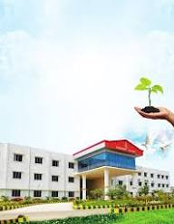

Visual Campus Showcase



Through Innovation, Excellence, and Values
Located in Peruvoyal, Gummidipoondi, Thiruvallur District, about 30 km from Chennai on NH-16 (formerly NH-5).
Boasting a lush green campus with modern infrastructure designed to foster technical innovation, research brilliance, and robust human values among engineering students.
To empower youth through quality education founded on strong values.
Highly qualified and dedicated academic professionals driving engineering breakthroughs.
Advanced lab architectures outfitted with professional equipment for immersive testing.
Regularly updated, industry-oriented learning systems built for immediate employability.
Structured training cycles focusing on soft skills, logic aptitude, and technical coding.
Vast learning vaults featuring online research databases, e-journals, and full textbook access.
Multimedia classrooms maximizing academic comprehension through advanced visual aids.
"At TJS, we ensure that students are exposed to robust academic methodologies paired with deep corporate interface realities. Our continuous training tracks produce global leaders equipped with engineering foundations and deep-rooted values."
Specialization paths in full-stack architecture, network design, systems computing, and core algorithms.
Focused engineering structures mapping predictive modeling platforms, cloud systems, and algorithmic analysis.
Deep training environments focused on intelligent cognitive automation, robotic processes, and deep learning neural models.
Enterprise data management systems, distributed web programming models, cybersecurity parameters, and cloud security frameworks.
Core instruction tracking communication arrays, analog system hardware, embedded processing units, and high-performance VLSI designs.
Power electronics architectures, renewable grid infrastructures, electrical drive systems, and heavy energy controllers.
Fully automated cataloging system holding massive collections of global engineering journals and research books.
Premium, secure accommodation facilities built with spacious layouts and structural high-speed network connections.
Hygiene-vetted food courts serving highly balanced nutritious meals to dynamic groups of students and faculty members.
Extensive network coverage traversing across multiple operational logistics paths within Chennai and Thiruvallur districts.
Yearly inter-collegiate technology challenges enabling students to project software and hardware builds globally.
Structured socio-civic community service units aimed at executing local development projects and health camps.
Vibrant combination of non-stop developer programming iterations alongside active athletic club championships.
Comprehensive aptitude modeling, cognitive reasoning tests, verbal agility mapping, and soft skill updates.
Intense full-stack coding sprints, framework design architectures, database testing, and technical interview simulations.
Direct placement operations linking qualified candidates with vetted global tech enterprises.

Tier-1 multi-national corporations initiate comprehensive placement cycles securing records for final-year students.
Core department faculty panels achieve prestigious distinctions in international technical research symposiums.
TJS Engineering students secure top ranks in collaborative structural coding challenges focused on AI applications.
Follow standard Anna University Single Window Admission parameters for direct engineering allocation tracks.
"The systematic training tracking systems enabled me to secure a solid development role right before my final year semesters completed."
"TJS combines rigorous discipline with modern practical laboratory platforms, making it ideal for technical growth."
"The campus offers massive safety structures alongside active placement frameworks that provide assurance to families."
T.J.S. Nagar, Peruvoyal, Near Kavaraipettai, Gummidipoondi Taluk, Thiruvallur District, Tamil Nadu - 601206.
+91 44 2792 5196 | +91 2792 5197
admission@tjsec.in | info@tjsec.in